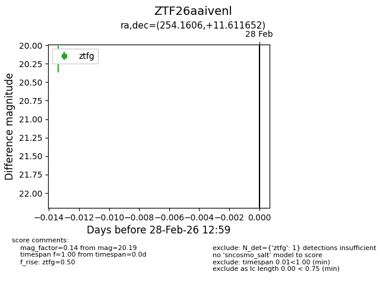
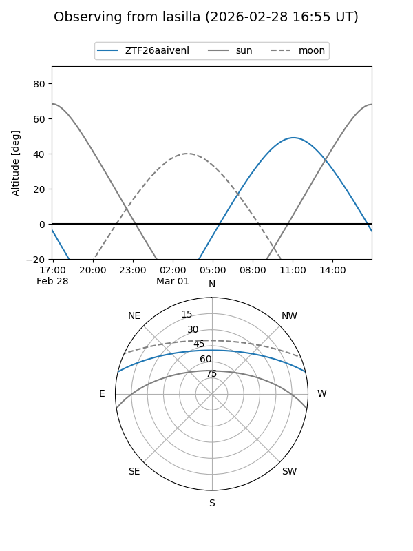
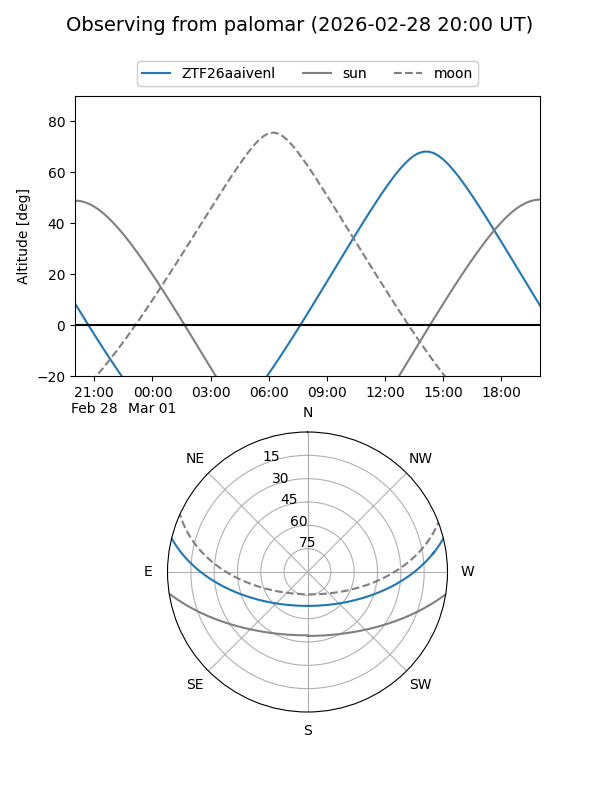

ZTF26aaivenl
Target ZTF26aaivenl at 2026-02-28 13:00
Aliases and brokers:
FINK: link
Lasair: link
ALeRCE: link
alt names
ZTF26aaivenl (ztf,fink_ztf)
Coordinates:
equatorial (ra, dec) = 254.1606,+11.61165
equatorial (HMS+DMS) = 16:56:38.54,+11:36:41.95
galactic (l, b) = (30.5759,+30.69119)
Flags:
Photometry:
last ztfg=20.19
1 ztfg detections
Lightcurve

Visibility


Additional plots